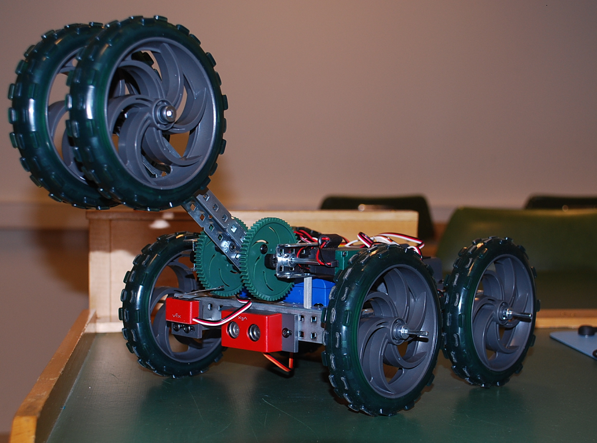
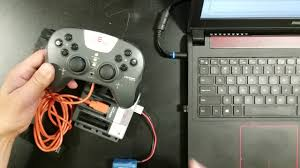
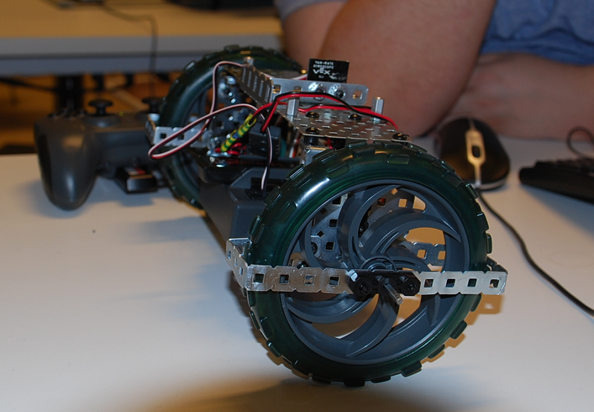
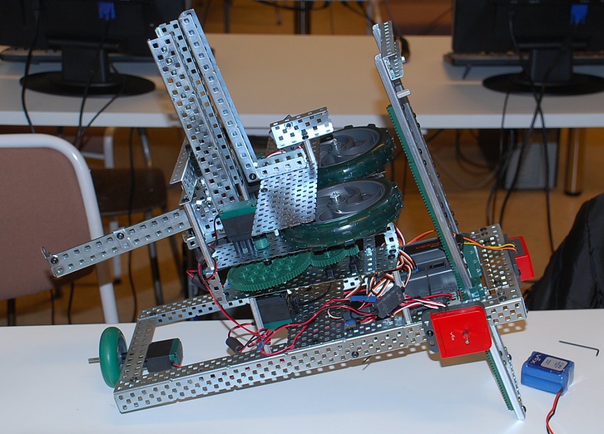

Þetta er fyrsti áfangi af tveimur í vélmennum, yfirleitt taka nemendur þennan áfanga á 3.önn því þá hafa þeir lokið við fyrstu áfanga í stærðfræði og eðlisfræði og náð góðum tökum á forritun eftir tveggja anna nám. Fjórða iðnbyltingin er núna í gangi og sjálvirkni ásamt AI er sífellt algengara þá sérstaklega í iðnframframleiðslu. Sjálvirkni véla (vélmenni) væri ekki gerast að án hugbúnaðar og vinnu fólks menntað í hugbúnaðargerð, þess vegna höfum við í Upplýsinga tækniskólanum verið með áfanga sem tengjast þessari breytingu í samfélaginu í bráðum 9 ár. Þessi áfangi er mjög vinsæll meðal nemenda enda er viðfangsefnið skemmtilegt, hér fá nemendur að smíða (setja saman) vélmenni og búa til hugbúnað (forrit) til að stýra því. Það gefur svo mikið að vera með eitthvað áþreifanlegt í höndunum eftir erfiði annar :-) Þetta er sama gleði og við sem lítil börn fengum eftir að hafa sett sama hús eða bíl í lego :-) gleði sem er svo mikilvæg í öllu sem við tökum okkur fyrir hendi. Annað sem er gefandi og þroskandi að mínu viti er að við látum nemendur okkar vinna tveir og tveir saman alla önnina sem getur líka verið erfitt en þess virði. Nemendur læra að forrita í C og eða C++, vinna verkfni á skipulegan hátt þ.e nota vísindalega aðferð skilgreina, koma með tilgátu, prófa og innleiða. Þekking af ýmsum er notuð, flæðirit, sauðakóði niðurbrot vandamála í einingar, teikningar, stærðfræði, eðlisfræði og forritun og hæfni í framsetningu á efni t.d vefsíðu eða texta og myndbandsgerð.


Samsetning er mikilvæg fyrir nemandan því þá kynnist hann öllum íhlutum vélmennis og virkni þeirra. Í þessu ferli kynnist nemandinn einnig CPU eða örgjörvanum (controler) analog og digital gáttum, mótorum og rofum. Nemendur fá teikningu til að fara eftir, nemanda er gefið ákveðið frelsi á samsetningu. Það er ekki oft sem nemendur okkar fá tækifæri að vinna með höndunum og nota verkfæri en það er einmitt það sem þessi áfangi gefur og þá sérstaklega þessi hluti en nemendur eru sífellt að í öllum verkefnum að breyta og bæta vélmennið.
Fyrsta forritunarverkefnið þ.e láta vélmennið gera eitthvað merkilegt :-) eins og t.d vinsælasta æfing á meðal nemenda í íþróttum þ.e hlaupa 6m áfram svo 6m aftutábak svo 12m áfram og áfturábak o.s.fr. vélmennið á sem sagt að gera það sama nema 0,5m uppí 2,5m sjá mynband
Næsta verkefni er að kenna vélmenni að keyra beint, síðan að beygja í hvaða gráðu sem er svo verkefni að setja upp neyðarstopp því ef eitthvað fer úrskeiðis viljum við mennirnir geta gripið inn :-). Hér eftir verða öll verkefni þannig að alltaf verður hægt að stöðva vélmennið
Vélmenni eru oft fjarstýrð í það minnsta verður að vera hægt að stöðva vélmennið ef það gerir eitthvað óvænt, þetta verkefni gengur út frá því. Nemendur forrita fjarstýringu sem er með 12 tökkum og tveim snúðum (joystik). Fjarstýring er einnig nauðsynleg vegna þess að hún tengir vélmenna heila við tölvu nemanda þannig að hægt er að debugga og hala upp hugbúnaði þráðlaust.
Vélmenni sem er þunglynt og vill forðast áreksta :-) nemendur forrita vélmenni þannig að það keyrir þegar ljós eru kveikt en stoppar ef slökkt. Þegar vélmennið keyrir á það beygja ýmist til hægri eða vinstri ef hindrun er framundan ekki ósviðað og sjálvirk ryksuga :-)
Eitt mesta notagildi vélmenna í dag er í að sækja vöru og koma á ákveðin stað, oft er þetta gert með línum sem vélmenni fylgja þar til komið er á stað sem varan er. Þetta verkefni gengur út á það að forrita vélmenni þannig að það fylgi línu og ekkert annað bara ekki fara útaf línu. Nemendur fá í hendur 3 línu skynjara hægri, miðja og vinstri. Þetta er erfitt verkefni því nemendur þurfa að stilla vélmennið þannig að það skynji línu frá öðru á golfi

Mynd af vélmenni sem getur klifrað upp tröppur
Mynd af fjarstýringu
Mynd af vélmenni sem er með gíro og getur haldið jafnvægi